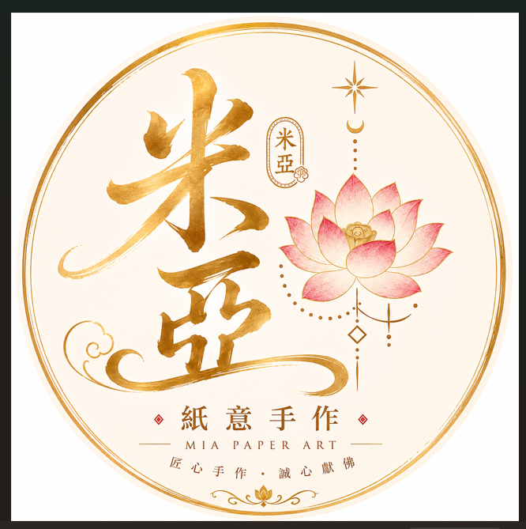
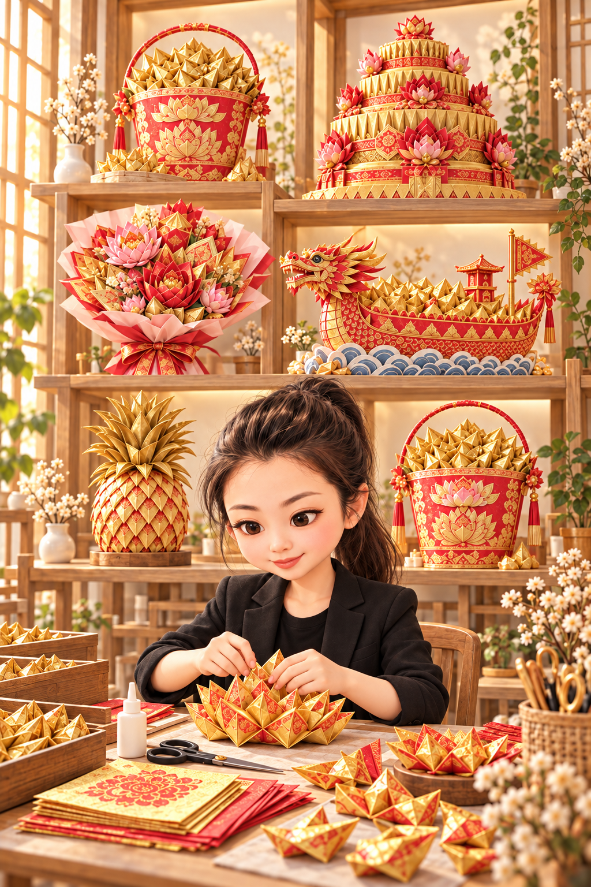
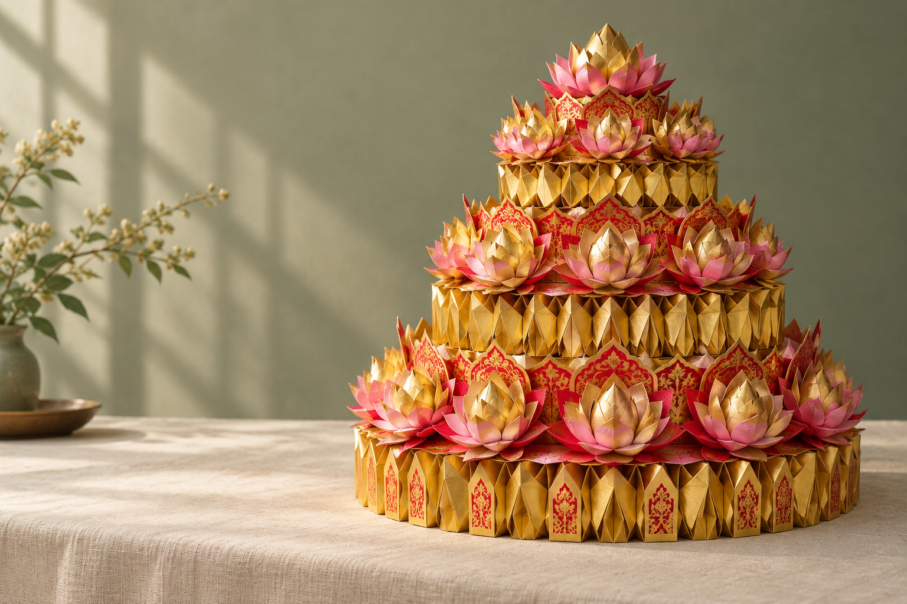

單層祝壽蛋糕
精巧雅緻金紙蓮花圍繞精巧單層造型，
讓一份祝壽心意細緻成形。
尺寸・色系可討論NT$ 1,280 起

米亞紙意手作MIYA PAPER ATELIER
THE COLLECTION
從精巧單層，到豐盛的層疊祝福。
挑選適合的作品，細節交給米亞。
金紙蓮花圍繞精巧單層造型，
讓一份祝壽心意細緻成形。
雙層金紙造型搭配細緻蓮花，
以層疊的美感承載敬獻心意。
三層造型呈現豐盛的祝福，
可討論祝壽對象、配色與細節。
款式與價格為示範參考，實際報價依尺寸、紙材與訂製細節確認。金紙祝壽蛋糕為紙藝供品，非食用蛋糕。

一摺，是一份用心。A NOTE FROM MIYA
金紙祝壽蛋糕，承接的不只是紙張的形狀，
也是人們對祝壽、祈願與敬意的寄託。
米亞紙意手作相信，細細摺製的每一片花瓣，都能讓抽象的心意有了模樣。從配色到成形，讓傳統紙藝融入柔和、文雅的美感。
MADE FOR YOUR INTENTION
先討論，再製作。
讓作品更貼近你的用途與期待。
挑選喜歡的款式，整理用途、數量與預算。
討論尺寸、色系、報價與希望收到的日期。
細節確認後開始製作，完成後安排交付。
請提供作品款式、用途、數量、希望收到的日期與預算；如有喜歡的配色或参考作品，也可一併整理。
可以先提出想法，實際可製作的尺寸、紙材與配色，需於訂製前確認。
請放在乾燥、通風處，避免受潮、擠壓與陽光長時間直射。搬運時請托住底部，保持作品形狀。
A LITTLE PAPER. A LOT OF HEART.
為祝壽、為敬獻，也為那一份想好好表達的祝福。